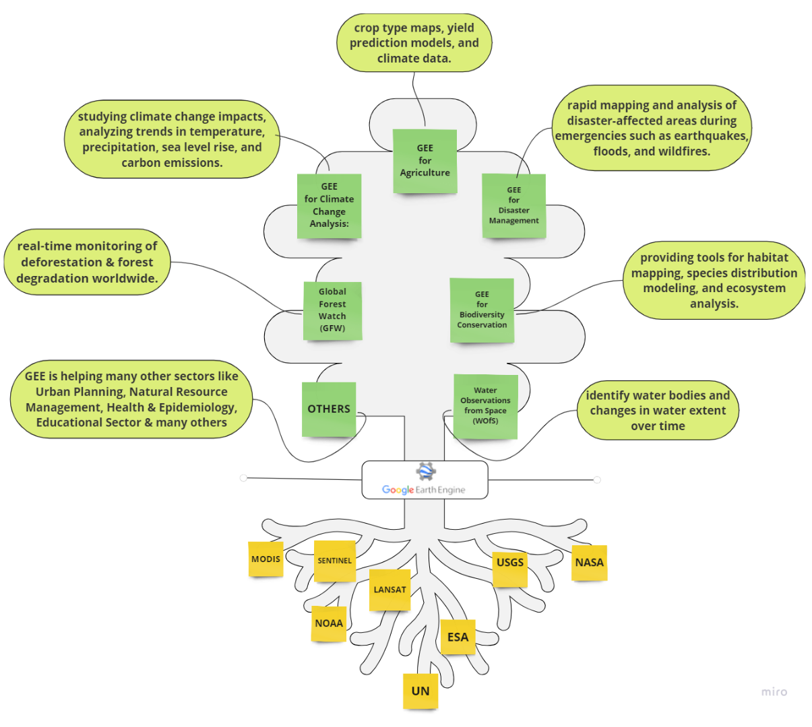

5 Week 5 - Google Earth Engine
5.1 Summary
This week was for Google Earth Engine (GEE), a cloud-based platform for accessing and processing large geospatial datasets.
- What is GEE?
- GEE is a cloud-based platform for processing large geospatial datasets.
- It simplifies data access and analysis for researchers, policymakers, NGOs, and the public.
- GEE uses an API and web-based IDE for rapid prototyping and visualization.
- Key terminology includes objects (vectors, rasters, features), images (raster data), and geometries (points, lines, polygons).
- Functionalities
- GEE facilitates spatial operations, machine learning tasks, and statistical analyses.
- Its functionalities include reducing imagery, accessing data from multiple sensors, and performing joins and intersections.
Last year, shortly after arriving in London, one of my initial tasks was to explore the evolution of Canary Wharf from its roots as docks to its current status as a financial hub. I connected to the city a lot more after this exposure of the history. Let us look at the transformation of Canary Wharf from its origins as dockyards to becoming a bustling business district.You can witness this evolution through Google Timelapse “Google Timelapse” (n.d.), one of the products of GEE. Simply press play button to observe the journey through time
5.2 Applications
There have been so advancment in remote sensing research and ease of doing research with satellite data because of GEE. So, I made a tree map of “What is the craze about GEE and which sectors has it impacted”.

5.3 Reflections
GEE presents an intriguing tool for analysis, showcasing the impressive strides in technology and data analysis. Its ability to swiftly process vast amounts of data quickly as compared to tools like SNAP and R, make it exceptionally useful and futuristic. The versatility of GEE is evident in its extensive data access and diverse range of applications, spanning from straightforward to intricate processing tasks. I firmly believe that GEE and cloud computing will revolutionize remote sensing research. Despite my prior experience in Python and R, exploring a new coding language like JavaScript piques my interest, prompting me to consider further learning opportunities.But, again, this entire course of MSc Urban Spatial Science has been an opportunity to go to uncharted territories and moving away from your comfort zone. And despite the demanding nature of the course, this exploration has been immensely enriching, largely thanks to the outstanding faculty at CASA, whom I consider are among the finest at Bartlett.